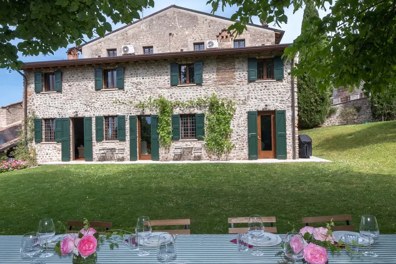
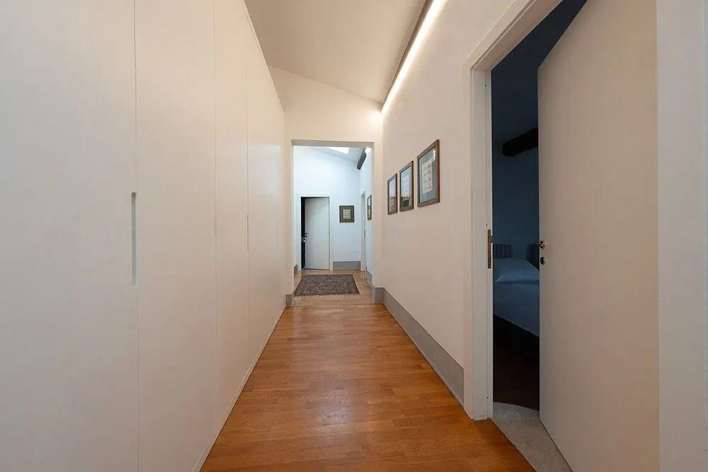

Custoza · Verona
Il MetroneA 17th-century country house
Stone walls, six bedrooms and a wide lawn in the Custoza hills. Lake Garda and Verona are both about twenty minutes away.

- 12guests
- 6bedrooms
- 6bathrooms
- 17thcentury
- 20′to Lake Garda
The house
An old house, made for being together
Il Metrone is a 17th-century country house in the village of Custoza, in the moraine hills just south of Lake Garda. Stone and cobble walls, green shutters, exposed beams and wooden floors: the old structure is still there, with the comforts of a modern home inside.
The whole house is yours, for large families and groups of friends of up to 12. Outside there is a big lawn for long lunches, the heated mini-pool and the barbecue; inside, a well-equipped kitchen to cook for everyone.


Bedrooms
Six bedrooms, six bathrooms
Doubles and twins, bright and quiet, furnished with period pieces, old prints and exposed beams. And with six bathrooms, nobody queues in the morning.


Spaces and amenities
Everything you need, already here
-
Heated mini-pool
With whirlpool jets, 98 cm deep: just right after a day at the lake.
-
Garden and lawn
Room for outdoor lunches, games and reading in the shade.
-
Gas barbecue
In the garden, ready to use.
-
Private parking
Gated, for 3 cars. Plenty of public parking just outside the gate.
-
EV charging
A charging station with two connectors for guests.
-
Daily housekeeping
Two hours a day included in your stay; extra hours on request.
-
Equipped kitchen
With dishwasher and a big table for the whole group.
-
Wi-Fi
Free throughout the house.
-
Air conditioning
For cool nights even in high summer.
-
Washing machine
Handy for longer stays.
Location
Between Lake Garda and Verona
Custoza is a small village in the municipality of Sommacampagna, among the vineyards of Bianco di Custoza. The lake, the city, wineries and golf courses are all within half an hour.
- Custoza Ossuaryon foot
- Golf Club Verona4 km
- Parco Giardino Sigurtà6 km
- Villafranca di Verona station7 km
- Valeggio sul Mincio & Borghetto8 km
- Verona Airport10 km
- Peschiera del Garda13 km
- Gardaland14 km
- Lazise19 km
- Verona, Arena22 km
- Sirmione25 km
Approximate driving distances.
Hospitality
Someone to ask, always
Janith and Imasha, our caretakers, live on the property in a separate private area. They welcome you on arrival, show you around and are there for you throughout your stay. Our gardener comes by regularly to look after the grounds.
Francesca and the Il Metrone family
Book directly with us
Pick your dates on the calendar and send us a request: we reply within 24 hours with confirmation and a quote, with no booking fees.
Check availability